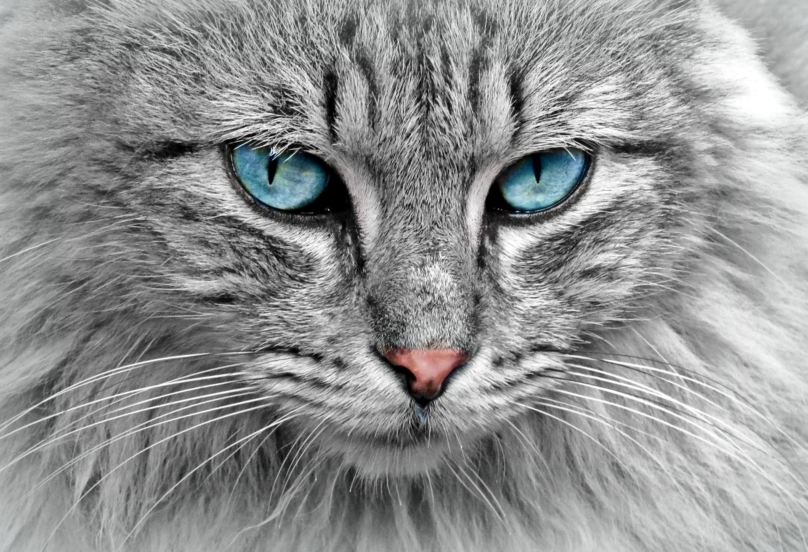

EXCELLENT SENSOR

INDEPENDENT

Cats have excellent sensory abilities: One of the great things about cats is their incredibly keen senses. They have excellent hearing and can hear sounds with a higher frequency than humans. In addition, cat eyes are also very adaptive in seeing in the dark. Their eyes are equipped with a reflective layer behind the retina, which allows them to see clearly in dim light.
Cats are independent animals: Cats are known as independent animals. They tend to have a more independent nature than other pets such as dogs. Cats are naturally good at grooming themselves, and they can go about their daily activities without being completely dependent on their owner.
Cats have a variety of unique behaviors: Cats have a variety of interesting and often adorable behaviors. They can play with toys, stalk prey, lick themselves as a sign of grooming, and jump nimbly and roll around in a relaxed manner. Cats also often show modesty by massaging their paws, which is often seen as a sign of affection.

The Persian cat, is one of the most popular and internationally recognized cat breeds. They are characterized by long, thick, and beautiful fur. The Persian cat has a stocky and heavy body, with a round face, flat nose and big charming eyes.
The Maine Coon cat is one of the largest cat breeds originating from the United States. They have a large, muscular body with thick, silky fur. The Maine Coon cat is known for its wide ears, large eyes, and long, hairy tail. They are friendly, intelligent, and human friendly.
The British Shorthair cat is one of the most popular and internationally recognized cat breeds. They have a distinctive appearance with a compact body, round head, and thick, short coat. The British Shorthair has a calm, relaxed nature and tends not to be too active.

The domestic cat, also known as the household cat, is a cat that has been domesticated and kept by humans for thousands of years. They are one of the most common pets worldwide. Domestic cats come from their ancestors, wild cats that have adapted